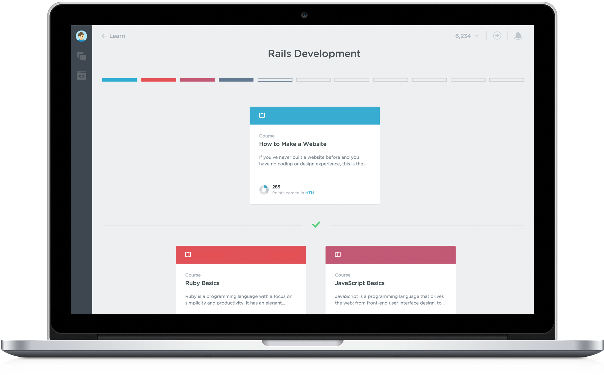
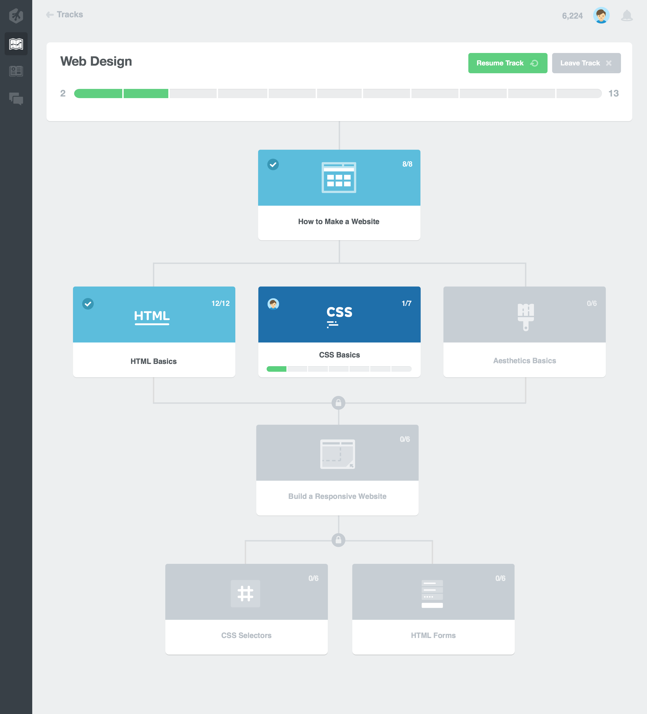
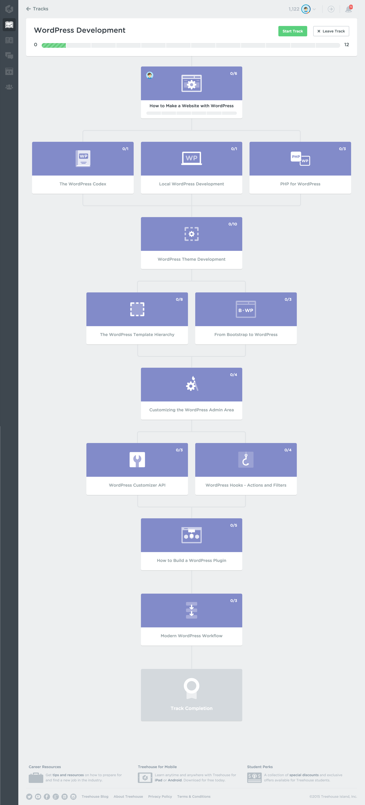
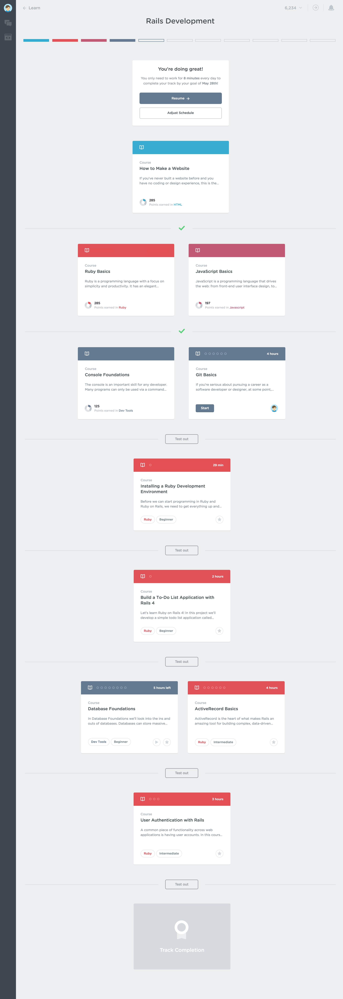

Treehouse Tracks
Overview
Tracks are teacher-curated, guided playlists of courses intended for students who want to gain basic proficiency in a number of concepts. Originally called Adventures and cobbled together from a limited selection of content at the outset, they evolved into allowing us to set up our own curriculums. As a result, students could learn these larger concepts in an order our teachers deemed ideal. We quickly devised a tree-style progression dynamic for Tracks and released Tracks to our students without any user testing. We had also already begun to move the card language project forward to a point where the Track course cards were soon outdated. I then proposed an updated design to solve various UX flaws that were quickly uncovered with the original, rushed design, with the added impetus of incorporating the new card language.
Original Concept
Tracks were originally envisioned with tiers that would be "unlocked" as you progressed through the previous tiers. Some students did not take to this model because there was no way for them to skip through content they had already mastered. Adventures had no restrictions, and with no mechanism for testing out of locked tiers, we quickly realized the futility of fighting an impossible battle to convince students that they should waste their time trudging through content they had already learned outside of Treehouse.
The original concept for Tracks. The card language seen here and on production was improvised before a global card language was established and was a variation of the Library card language at the time.
Production
On production, a temporary fix was soon deployed that removed all locks and allowed students to freely progress through Track courses out of order if they wished—and only after a reminder recommending that students take courses in the prescribed order. This mostly solved student outrage, but Tracks were still fundamentally flawed without the ability for us to be able to reliably gauge student knowledge after completing a Track.
The current "Wordpress Development" Track on production. This design hasn't been updated in over a year, neglected and lacking even a card language update.
Project Goals
Student feedback also made it clear that the tree structure was confusing. Resuming was awkward, with no visibility given to the current course once courses in the tree below the initial fold were in progress.
The primary goals of the redesign project were thus to: a) design the mechanism for which students could test out of tiers, b) apply the new card language to Tracks and c) to make resuming more contextual.
Project Exploration
This early exploration simplified the tree structure without removing it entirely, introduced a non-contextual global resume card, and a mechanism to test out of content tiers. The Track progress bar was also overhauled, introducing topic-colored bubbles that correlated to the topic color of the represented course, as well as mimicking the progress bubble states of the new card language.
A very early iteration of the new card language can be seen in this exploration.
Project Result
This production-ready mockup replaced the early card language with the production language, topic-colored the global resume button that correlated to the course currently in progress, added the current course and shifted schedule adjustment to the global resume card, and removed the tree structure entirely in favor of simple sectioned tiers. Each section could hypothetically contain 1-3 courses and once complete, each tier's "Test out" button would be replaced by a checkmark.
However, because of recently shifting priorities, designers on the Web Team focused most of our energy on increasing engagement and removing friction from the core experience in order to hopefully stifle attrition. This restructuring and visual overhaul was then shelved until resources could be made available for Tracks to include exercises (new practice content) and for a robust testing system to be built on top of our existing Code Challenge engine. In the meantime, new Tracks have simply been made flat/linear with one course per tier in order to at least make the order of progression more obvious in the tree structure.
This production-ready mockup shows an in-progress Track state.